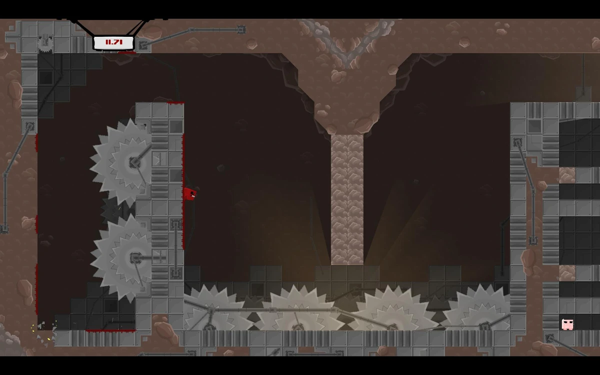
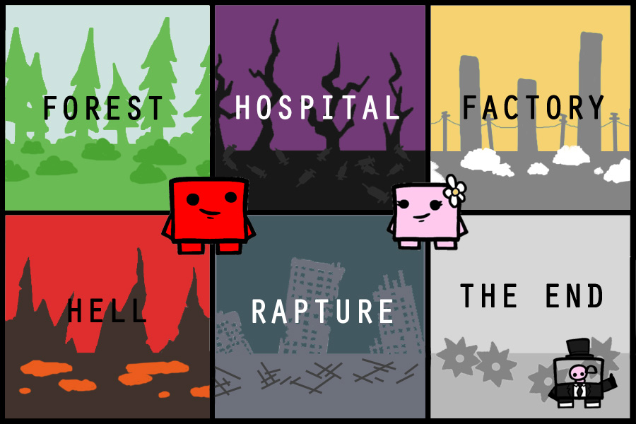

Super meat boy est un jeu vidéo créé et édité par la team meat en 2010.
Ce jeu est un jeu vidéo de type "die and retry", vous recommencez le niveau dès que vous mourrez.
Le jeu est très aprécié pour sa difficulté extreme.
Le jeu été a l'origine un jeu flash, un jeu en ligne accessible sur navigateur.
Le jeu a gagné en popularité a été entièrement recodé afin de l'améliorer.
Voici l'écran d'accueil du jeu
---Spoilers ici---
Le joueur doit sauter, esquiver et surmonter des obstacles à travers divers niveaux.
Pour cela il peut sauter, courrir, s'aggriper aux mur et sauter de ceux-ci.

Voici un exemple de niveau
le jeu est composé de 6 chapitres contenant 20 niveau et 1 boss chacun.
